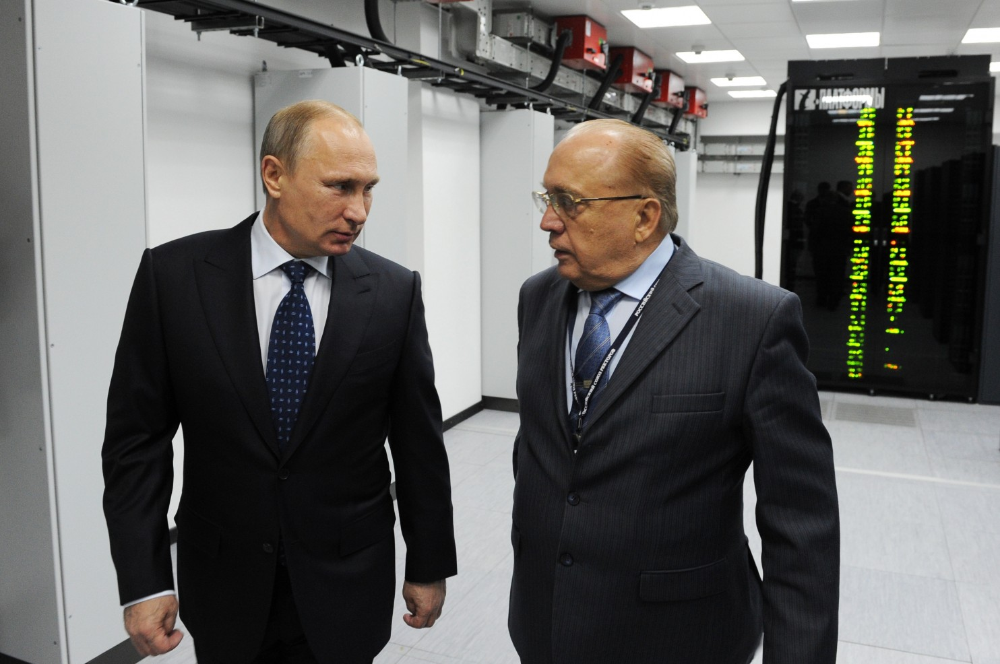
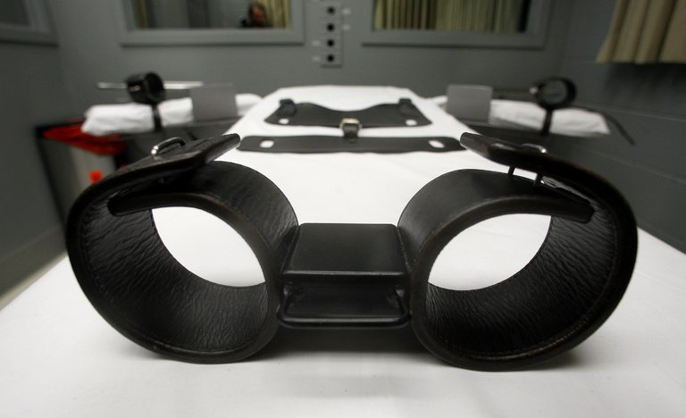
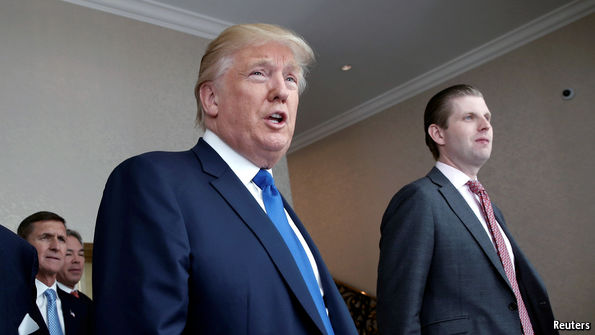

MOSCOW - The recent spate of embarrassing emails and other records stolen by Russian hackers is President Vladimir Putin's splashy response to years of what he sees as U.S. efforts to weaken and shame him on the world stage and with his own people, according to Russia experts here and in the U.S. intelligence world and academia.
Putin is seeking revenge and respect, and trying to reassert Russia's lost superpower status at a time of waning economic clout and an upcoming Russian election, according to interviews with specialists here and in Washington, with a senior U.S. intelligence official, recently retired CIA operations officers in charge of Russia, and the last three national intelligence officers for Russia and Eurasia analysis in the Office of the Director of National Intelligence.

SALEM, Ore. As superintendent of the Oregon State Penitentiary, I planned and carried out that state's only two executions in the last 54 years. I used to support the death penalty. I don't anymore.
I was born and raised in the segregated South. I was 13 when Emmett Till was lynched for 'flirting' with a white woman. I can remember upstanding black Christians expressing hope that his murderers would be caught and hanged. It seemed quite reasonable to me then that death was the only proportionate response for people who would so egregiously violate the norms of a society.

DONALD TRUMP inhabits a world of shiny, gold-plated, nothing-really-matters nihilism, and he is betting that voters do, too. That is the best explanation for the show that the Republican nominee mounted on the morning of September 16th with the full, helpless, beaten cur connivance of the press, cable news and TV networks who covered it lavishly, at one point treating watching Americans to extended coverage of an empty podium inside Mr Trump's new luxury hotel in Washington, DC, while the businessman's motorcade nosed its way through the traffic.
If the show proves popular with audiences outside the Beltway and opinion polls continue to narrow to a dead heat, the businessman-demagogue may yet win his bet.